Objectives of this Exercise
Note: These instructions works on BASH terminal on Windows & Mac terminals.
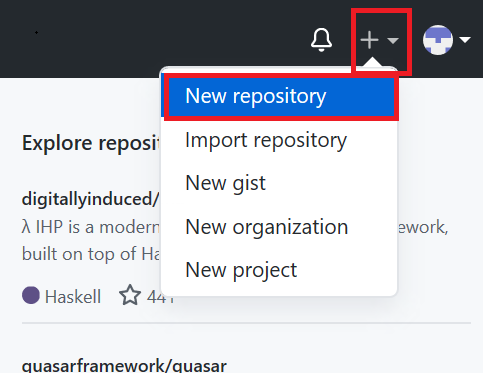
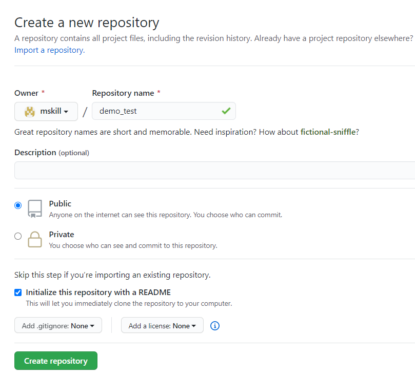
Now, your repository is created, and it looks as:
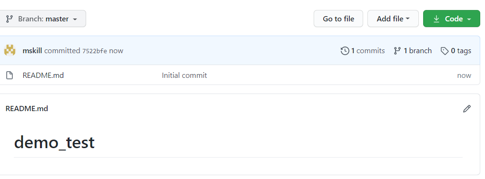
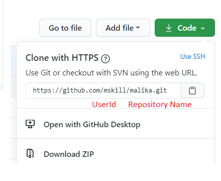 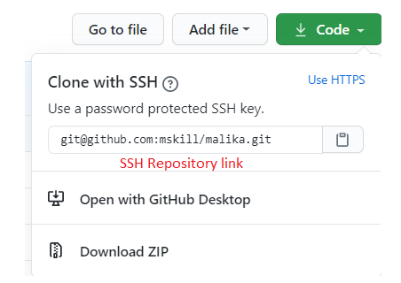
Copy the SSHRepositoryLink on to your clipboard.
Open the command prompt or terminal to use the GitHub commands:
-To change the directory simply use:
cd <name of the directory you want to change to>
-To go to the folder “Downloads” use: cd Downloads
Use the SSH repository link from out GitHub Repository and clone it to your local system as follows:
git clone pastesshrepositorylinkhere
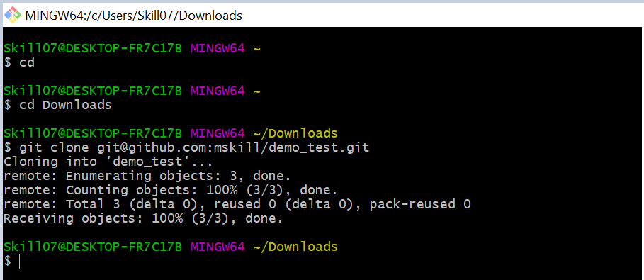
Now, the folder is copied to my ‘Downloads’. Just check the ‘Downloads’ have you got the folder demo.
cd demo
Get the list of the files in the folder demo, use:
For Windows: dir For Mac: ls
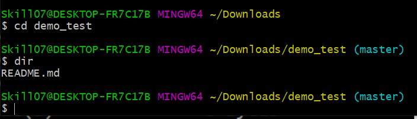
To view the content of the file:
For Windows: type README.md
For Mac: cat README.md
To open a README.md file:
For Windows: notepad README.md
For Mac: open README.md
To create a new file:
For Windows: notepad test.txt
For Mac: vi test.txt
Add to the repository:
For Windows/Mac: git add test.txt
git status
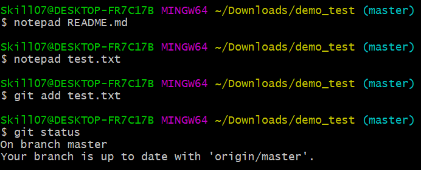
git commit -m “write message here”
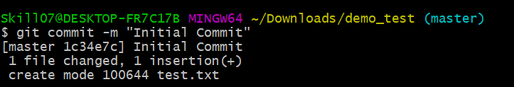
git push
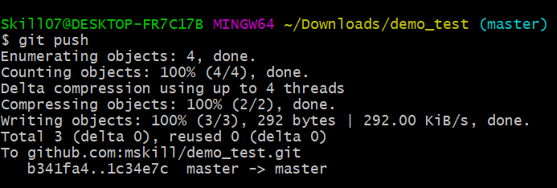
Now, this make the changes in my GitHub repository
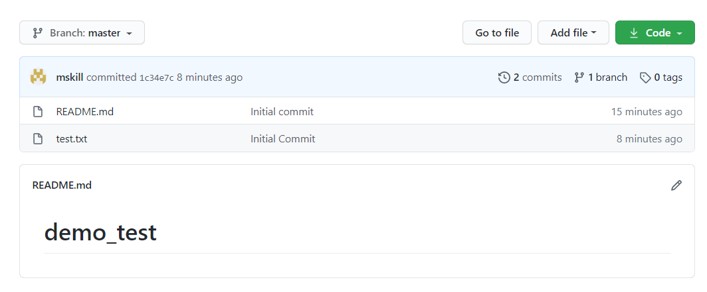
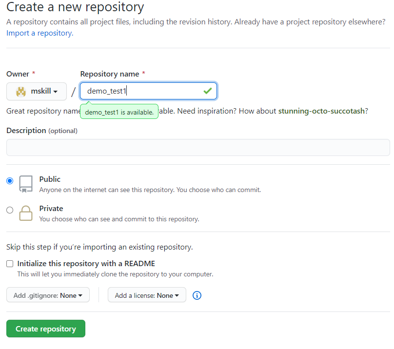
Copy the SSHRepositoryLink on to your clipboard as did before
To come out from the demo folder first use
cd ..
To make a directory in download folder:
mkdir demo1
cd demo1
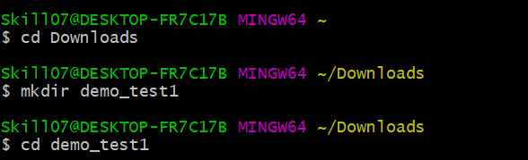
To create a readmd file use
echo "# demo1" >> README.md
Initialize the directory
git init
Create and add a README.md file. You can use a normal text editor depending on which OS you are using.
git add README.md
Check the status of the file
git status
Commit the changes
git commit -m "first commit"
Add the origin where we have to push the file. This is the SSHRepositoryLink you copied when you created the repository.
git remote add origin git@github.com:mskill/demo1.git
git push -u origin master
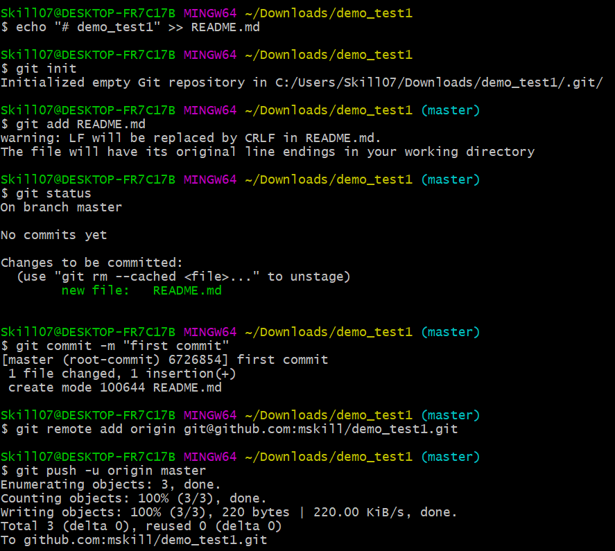
Now, the README.md file is created in our repository
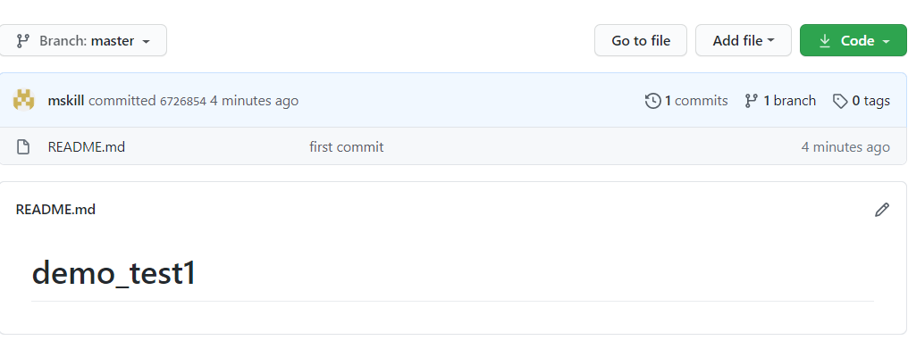
Lavanya
| Date | Version | Changed by | Change Description |
|---|---|---|---|
| 2020-08-25 | 2.0 | Lavanya | Migrated Lab to Markdown and added to course repo in GitLab |